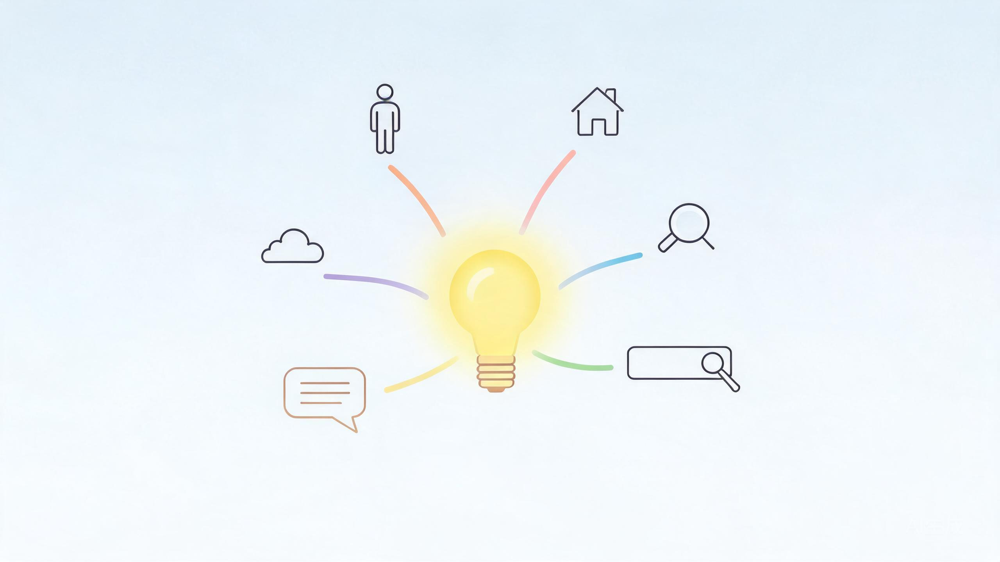

◈ 引言 · 第7天手记
今天聊点轻松的：产品想法（idea）从哪里来？
一般来说，产品的 idea 从六个方面来——自己、身边、市场、搜索、社群，还有那个最容易踩坑的「YY」。

01
自己的需求
PERSONAL PAIN · 航线段 01
就是你自己的需求。
◆工作提效类：PPT，汇报报告，数据分析，会议纪要等
◆生活便利类：旅游规划，无感记账，健身督促等
◆学习效果类：拆书、笔记整理、艾宾浩斯遗忘曲线，费曼输出等
这类需求是你真真切切、实实在在的需求，不是伪需求。但这类需求也有个问题：你的需求，对别人来说，也是需求吗？
02
身边的需求
OBSERVED NEEDS · 航线段 02
这类需求就是日常所能观察到的、接触到的需求。
比如你观察到的，上班路上地铁上大家的网络信号不稳定。
比如你朋友生了一个病，想找个靠谱的医生，网上搜索、问了 AI、去了几家医院，治疗都没有什么效果，却又不知道去哪里找靠谱的医生。
03
市场的案例
MARKET PROOF · 航线段 03
它的优势在于：成功的竞品，已经帮你验证过，市场一定存在、这条路一定能走通。
说好听点叫模仿借鉴，说难听点叫"抄作业"。但往往守旧者等死，创新者找死，所以很多聪明人就自己定位为创新跟随者——在创新者取得一定的成绩后模仿他，做出改善和差异化。
我们举一些成功公司的案例：
◆Google：Google 是世界上第 11 个搜索引擎，它先抄了别的搜索引擎，然后引入了 PageRank 算法，让搜索结果排序更加合理，从而提供了差异化的价值。
◆百度：抄的 Google，然后做出了差异化的价值，比如最早百度主打的是"更懂中文"。
◆腾讯：它抄了在当时颇为成功的聊天软件 ICQ，改名叫做 OICQ（再后来改名为 QQ）。QQ 比 ICQ 提供的差异化的价值，那可多了去了，产品体验比原版 ICQ 好很多，大家可以自行搜索。后来，腾讯又做了微信，嗯，大家应该知道，微信这个产品，也并不是原创的。
◆知乎、优酷、滴滴、微博、淘宝、抖音……他们都是从"抄"开始、再做出差异化的价值，进而获得成功。
这样的例子还有很多很多。
✦ 灯塔 · 金句
「站在巨人的肩膀上，跑在创新者的屁股后。」
但需要注意，你的差异化价值在哪里，往往决定着产品的成败。
04
搜索引擎
SEARCH SIGNALS · 航线段 04
这个世界上，每天有 30 亿次搜索，其中 20% 的搜索词组，是昨天没有出现过的。那就意味着，每天都有新的机会，就看你能不能发现了。
使用这套方法论的成功公司包括 Veed.io，他的创始人有一个金句 "Make something people search for"。Veed.io 的确也是这么实践的，它每月网站流量有 21 万，其中 63% 都是来自于搜索引擎。
此方法的难点是：关键词，真不好找。
05
社媒社群
COMMUNITY PULSE · 航线段 05
可以泡在各大社媒社群里，看什么问题被什么人吐槽抱怨得多，有没有可能做成产品。
可以试着找一些用户连接，分享你的 demo 或 MVP 给他们，看他们的反应和态度。如果真有人愿意花钱来用，说明有产品化的潜力。
06
YY 需求
WISHFUL THINKING · 航线段 06
你自己 YY 出来的需求，觉得很酷，很有前景，可能是真的，但绝大部分情况下都是假需求。
▲ 提示 · 当你 YY 需求的时候，不妨问自己一句：用户是谁？他愿意花钱吗？
✦
✦ 总结
◆如果想做出长期价值，可以优先考虑自己的需求和身边的需求。
◆如果想短期拿结果，优先考虑市场案例，先拿到正反馈，见效快，弯路少。
◆第四、五两种需要一套"体系"来支持，有一定难度，但掌握后可能会快速放大你的结果。
◆第六种需求是我们要尽量避开的。
你还有什么好的获取产品 idea 的方法吗？
评论区聊聊，互相借点灵感
点赞在看转发
⚓
END
我是未迟，一位正在自学 Web 出海的记录者。
挑战30天自学Web出海 · 每天更新一篇手记
如果这条航线对你有启发，欢迎点赞、在看、转发，我们下篇见。